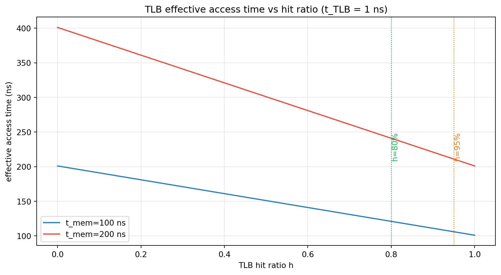
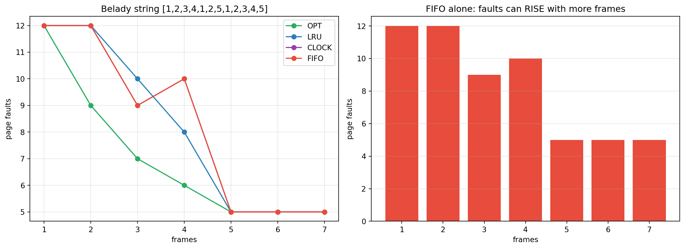

flowchart TD
A["CPU accesses virtual address"] --> B{"PTE present?"}
B -- "yes" --> C["translate via PFN"]
B -- "no" --> D["page-fault trap to OS"]
D --> E{"free frame available?"}
E -- "no" --> F["run replacement policy, write victim"]
F --> G["read page from swap into frame"]
E -- "yes" --> G
G --> H["update PTE, retry instruction"]
H --> A
Operating Systems: Three Easy Pieces, Part 2 — Memory Virtualization
Address spaces and the memory API, base-and-bounds translation, segmentation, free-space management, paging and page tables, translation lookaside buffers, multi-level page tables, and swapping mechanisms and policies from optimal and FIFO/LRU to the clock algorithm — following OSTEP, Chapters 13–24
Computer Science
Operating Systems
Virtual Memory
Paging
Address Translation
Systems Programming
A first-principles treatment of memory virtualization following Operating Systems: Three Easy Pieces. It covers the address-space abstraction, the memory API and its common errors, base-and-bounds dynamic relocation, segmented address translation, free-space management with splitting and coalescing and allocation strategies, the introduction of paging with page tables and page-table entries, translation lookaside buffers and effective access time, multi-level and advanced page tables, and swapping mechanisms and policies including the optimal algorithm, FIFO, LRU, approximate LRU with the clock algorithm, Belady’s anomaly, and complete virtual memory systems, with an executable Python laboratory that simulates address translation, TLB performance, page replacement, and free-space allocation.
Every process believes it has all of memory to itself: a private, contiguous address space starting at zero. In reality, the OS and hardware cooperatively map each virtual address to a physical location — sometimes in RAM, sometimes on disk. This is the second half of virtualization.
This is Part 2 of a three-part series following Operating Systems: Three Easy Pieces (OSTEP). Here we cover memory virtualization: Chapters 13–24. See Part 1 for CPU virtualization and Part 3 for concurrency.
TipThe Series
- Part 1 — CPU Virtualization
- Part 2 — Memory Virtualization (this article)
- Part 3 — Concurrency
1 The Address Space
The OS must give each process the illusion of a large, private, contiguous block of memory: the address space. It contains, conceptually:
- Code (instructions) at the bottom,
- Static data (globals),
- Heap (growing upward, managed by
malloc), - Stack (growing downward, holding locals and call frames).
The address space is a fiction. A process’s virtual address 0x1000 might live at physical address 0x4A1000, or be on disk, or not exist at all.
1.1 Goals
- Transparency — the program should not know memory is virtualized.
- Efficiency — both time (minimal translation overhead) and space (small metadata).
- Protection — one process must not read or write another’s memory.
1.2 Multiprogramming and Time-Sharing
Early machines ran one program at a time. To run several, the machine must swap processes in and out — and to do that cheaply, it needs the address-space abstraction so a process can be relocated anywhere in physical memory.
2 The Memory API
In C, memory is managed with malloc() and free():
int *x = malloc(10 * sizeof(int)); // allocate
free(x); // releaseThe library sits on top of system calls: brk/sbrk extend the heap, while mmap maps anonymous or file-backed regions. The OS tracks which physical frames back which virtual pages.
2.1 The Seven Deadly Memory Errors
OSTEP’s catalogue, worth memorizing:
- Allocating the wrong size —
sizeof(int)versussizeof(int*). - Not allocating — dereferencing an uninitialized pointer.
- Not initializing — reading uninitialized heap memory.
- Forgetting to free — a memory leak.
- Freeing memory too early — a dangling pointer / use-after-free.
- Double free — undefined behavior, often heap corruption.
- Buffer overflow — writing past the end of an allocation.
These bugs are exactly what Part 3’s concurrency errors and modern tools (ASan, Valgrind) exist to catch.
3 Address Translation: Base and Bounds
The first mechanism is dynamic relocation with two registers:
- Base — the physical start of the process’s region.
- Bounds — its size (or limit).
The CPU’s Memory Management Unit (MMU) translates each virtual address on the fly:
\[ \text{physical address} = \text{base} + \text{virtual address}, \qquad \text{valid iff } 0 \le \text{virtual address} < \text{bounds} \]
If the check fails, the MMU raises an exception (segmentation fault). The OS, not the hardware, sets the base/bounds on a context switch — this is limited direct execution applied to memory.
Hardware requirements: privileged mode, base/bounds registers, address translation, exception handling, and privileged instructions to set the registers. OS responsibilities: allocate address spaces, maintain a free list of physical memory, set base/bounds on context switch, and handle faults.
Base-and-bounds is elegant but wastes memory: the stack and heap are far apart, yet the whole span between them is allocated contiguously. This motivates segmentation.
4 Segmentation
Segmentation generalizes base-and-bounds by dividing the address space into logical segments — code, heap, and stack — each with its own base and bounds. A virtual address is a pair (segment, offset); the hardware adds the segment’s base to the offset, checking the offset against that segment’s bound.
Segments can grow (the heap grows up, the stack grows down), so the hardware may support a negative-growth bit. Sharing and protection bits (read/write/execute) attach naturally per segment.
The difficulty is external fragmentation: variable-sized segments leave holes between allocations, and free memory becomes a collection of awkward gaps. Compacting memory is expensive. The fix is to manage free space well (next section), or to abandon variable sizes entirely — which leads to paging.
5 Free-Space Management
The allocator must service variable-sized requests from a pool of free memory. The classic implementation is a free list.
- Splitting: a request smaller than a free chunk splits it, returning the remainder to the list.
- Coalescing: when a chunk is freed, adjacent free chunks are merged to fight fragmentation.
- Headers: because
free()receives only a pointer, each allocation carries a small header storing its size and magic number.
5.1 Allocation Strategies
| Strategy | Rule | Trade-off |
|---|---|---|
| Best fit | smallest chunk that fits | minimizes leftover but slow (searches all) and leaves tiny fragments |
| Worst fit | largest chunk | leaves large remainders, but slow and often worse |
| First fit | first chunk that fits | fast; can pollute the front of the list |
5.2 Segregated Lists and Slab Allocators
Real allocators keep segregated free lists for common sizes: a request for 8 bytes goes to the 8-byte list, avoiding a search. Slab allocators pre-package kernel objects into caches. These are the practical realization of free-space management in Linux.
6 Introduction to Paging
The big idea: chop the address space into fixed-size pages (e.g., 4 KB) and physical memory into equal frames. Mapping is now per-page, stored in a page table — one Page Table Entry (PTE) per virtual page.
Translation for virtual page number VPN with offset:
\[ \text{VPN} = \frac{\text{VA}}{\text{page size}}, \qquad \text{offset} = \text{VA} \bmod \text{page size} \]
\[ \text{physical address} = \text{PFN} \times \text{page size} + \text{offset} \]
where PFN is the page frame number read from the PTE. A PTE also carries a valid/present bit, protection bits (read/write/execute), a dirty bit, and a reference bit — used later by replacement policies.
Paging eliminates external fragmentation but introduces two costs: internal fragmentation (the last page is partly wasted) and the memory overhead of page tables (typically 4 bytes per 4 KB page, ~0.1% of the address space).
7 Translation Lookaside Buffers (TLBs)
If every memory access required a page-table access, we would double memory traffic. The TLB is a small, fast, fully associative hardware cache of recent translations. A TLB hit costs one fast lookup; a TLB miss requires walking the page table (and updating the TLB).
Key details:
- Who handles the miss? Older hardware did it; modern designs raise an exception to the OS (software-managed TLB).
- Context switches and ASIDs. Two processes may use the same virtual page numbers for different frames. Address Space Identifiers (ASIDs) tag TLB entries so they need not be flushed on every switch.
- Replacement. TLBs use the same policies as caches (LRU, random), since translation locality resembles memory locality.
- Effective Access Time (EAT): with hit ratio \(h\), TLB lookup time \(t_{\text{TLB}}\), and memory access time \(t_{\text{mem}}\):
\[ \text{EAT} = h\,(t_{\text{TLB}} + t_{\text{mem}}) + (1-h)\,(t_{\text{TLB}} + t_{\text{mem}} + t_{\text{mem}}) \]
Even a modest hit ratio yields near-full performance, because the second term grows quickly as \(h\) falls. This is why the TLB is one of the most performance-critical structures in a CPU.
8 Advanced Page Tables
A flat page table for a 32-bit address space with 4 KB pages has \(2^{20}\) entries — 4 MB per process. Multi-level page tables solve this by paging the page table itself: a page directory points to page-table pages, and unused regions simply omit their page-table pages entirely. The cost is that a TLB miss now requires multiple dependent memory accesses (one per level).
Alternatives include inverted page tables (one entry per physical frame, indexed by a hash) and hashed page tables — the latter common in 64-bit systems (x86-64 uses four-level paging). The lesson is a recurring systems theme: hierarchical indirection trades time for space, and caches (the TLB) restore the time.
9 Swapping: Mechanisms
When physical memory fills, the OS moves some pages to swap space on disk. A PTE’s present bit indicates whether a page is in memory; if not, accessing it raises a page fault:
Details that matter:
- Dirty bit. If the victim page was modified, it must be written back to swap; if clean, it can be dropped.
- Watermarks. The OS keeps low and high watermarks; when free frames drop below
LW, a background cleaner evicts untilHWis reached. - Clustering. The OS may write back several pages at once to amortize disk seeks.
10 Swapping: Policies
Which page should be evicted? The optimal policy (Belady’s) evicts the page used farthest in the future — unimplementable (it needs the future) but the gold standard for comparison.
Practical policies:
- FIFO — evict the oldest loaded page. Simple, but can evict hot pages and suffers Belady’s anomaly: more frames can produce more faults.
- LRU (Least Recently Used) — evict the page unused for the longest. A good approximation of optimal, but expensive to implement exactly (it needs ordering on every access).
- Approximate LRU via the clock algorithm — pages sit in a circle with a reference bit; the hand advances, clearing bits, and evicts the first page whose bit is 0. This is the standard implementation (with a dirty bit to avoid needless writes).
- Random — surprisingly competitive and trivial.
10.1 Locality
All of this works because programs exhibit temporal and spatial locality: recently used pages are likely to be used again. Without locality, no caching scheme works. When the working set exceeds physical memory, the system thrashes — spending all its time paging and little executing.
11 Laboratory: Translation, TLBs, and Replacement
11.1 Address Translation
Code
from math import log2
PAGE_SIZE = 4096
OFFSET_BITS = int(log2(PAGE_SIZE))
def translate(va, page_table):
vpn = va >> OFFSET_BITS
offset = va & (PAGE_SIZE - 1)
if vpn not in page_table:
return None
return (page_table[vpn] << OFFSET_BITS) | offset
page_table = {0: 5, 1: 2, 2: 9, 3: 1}
print("=== ADDRESS TRANSLATION (page size 4096) ===")
for va in [0x0000, 0x1234, 0x2000, 0x3FFF, 0x8000]:
pa = translate(va, page_table)
vpn = va >> OFFSET_BITS
if pa is None:
print(f" VA=0x{va:04x} VPN={vpn:2d} -> PAGE FAULT (not present)")
else:
print(f" VA=0x{va:04x} VPN={vpn:2d} PA=0x{pa:05x} "
f"(PFN={page_table[vpn]}, offset={va & (PAGE_SIZE-1)})")=== ADDRESS TRANSLATION (page size 4096) ===
VA=0x0000 VPN= 0 PA=0x05000 (PFN=5, offset=0)
VA=0x1234 VPN= 1 PA=0x02234 (PFN=2, offset=564)
VA=0x2000 VPN= 2 PA=0x09000 (PFN=9, offset=0)
VA=0x3fff VPN= 3 PA=0x01fff (PFN=1, offset=4095)
VA=0x8000 VPN= 8 -> PAGE FAULT (not present)11.2 TLB Effective Access Time
Code
import numpy as np
import matplotlib.pyplot as plt
def eat(h, t_tlb, t_mem):
return h * (t_tlb + t_mem) + (1 - h) * (t_tlb + t_mem + t_mem)
h = np.linspace(0, 1, 200)
fig, ax = plt.subplots(figsize=(9, 5))
for t_mem, color in [(100, "#2980b9"), (200, "#e74c3c")]:
ax.plot(h, eat(h, 1, t_mem), color=color, label=f"t_mem={t_mem} ns")
for hh, col in [(0.80, "#27ae60"), (0.95, "#e67e22")]:
ax.axvline(hh, color=col, ls=":", lw=1)
ax.annotate(f"h={hh:.0%}", (hh, 250), rotation=90, color=col, va="top")
ax.set_title("TLB effective access time vs hit ratio (t_TLB = 1 ns)")
ax.set_xlabel("TLB hit ratio h"); ax.set_ylabel("effective access time (ns)")
ax.legend(); ax.grid(alpha=0.3)
plt.tight_layout(); plt.show()
print("=== TLB EFFECTIVE ACCESS TIME (t_TLB=1ns, t_mem=100ns) ===")
print(f"{'hit ratio':>10} {'EAT (ns)':>10} {'overhead':>10}")
for hh in [0.50, 0.80, 0.90, 0.95, 0.98, 0.99, 1.00]:
e = eat(hh, 1, 100)
print(f"{hh:10.0%} {e:10.2f} {(e-101)/101*100:9.1f}%")
print(" (101 ns = compulsory TLB + memory access; a miss adds a second access)")
=== TLB EFFECTIVE ACCESS TIME (t_TLB=1ns, t_mem=100ns) ===
hit ratio EAT (ns) overhead
50% 151.00 49.5%
80% 121.00 19.8%
90% 111.00 9.9%
95% 106.00 5.0%
98% 103.00 2.0%
99% 102.00 1.0%
100% 101.00 0.0%
(101 ns = compulsory TLB + memory access; a miss adds a second access)11.3 Page Replacement and Belady’s Anomaly
Code
import matplotlib.pyplot as plt
def faults_fifo(refs, frames):
q, cur, f = [], set(), 0
for r in refs:
if r in cur:
continue
f += 1
if len(cur) < frames:
cur.add(r); q.append(r)
else:
victim = q.pop(0); cur.discard(victim)
cur.add(r); q.append(r)
return f
def faults_lru(refs, frames):
cur, f, last = set(), 0, {}
for i, r in enumerate(refs):
last[r] = i
if r in cur:
continue
f += 1
if len(cur) < frames:
cur.add(r)
else:
victim = min(cur, key=lambda x: last[x])
cur.discard(victim); cur.add(r)
return f
def faults_opt(refs, frames):
cur, f = set(), 0
for i, r in enumerate(refs):
if r in cur:
continue
f += 1
if len(cur) < frames:
cur.add(r)
else:
future = {x: (refs[i+1:].index(x) if x in refs[i+1:] else 10**9) for x in cur}
victim = max(future, key=future.get)
cur.discard(victim); cur.add(r)
return f
def faults_clock(refs, frames):
cur, ref_bit, f, hand = [None]*frames, [0]*frames, 0, 0
present = {}
for r in refs:
if r in present:
ref_bit[present[r]] = 1
continue
f += 1
while True:
if cur[hand] is None or ref_bit[hand] == 0:
if cur[hand] is not None:
del present[cur[hand]]
cur[hand] = r; present[r] = hand; ref_bit[hand] = 1
hand = (hand + 1) % frames
break
else:
ref_bit[hand] = 0
hand = (hand + 1) % frames
return f
belady = [1,2,3,4,1,2,5,1,2,3,4,5]
frames_range = list(range(1, 8))
fig, axes = plt.subplots(1, 2, figsize=(13, 4.8))
for name, fn, color in [("OPT", faults_opt, "#27ae60"), ("LRU", faults_lru, "#2980b9"),
("CLOCK", faults_clock, "#8e44ad"), ("FIFO", faults_fifo, "#e74c3c")]:
ys = [fn(belady, f) for f in frames_range]
axes[0].plot(frames_range, ys, "o-", color=color, label=name)
axes[0].set_title("Belady string [1,2,3,4,1,2,5,1,2,3,4,5]")
axes[0].set_xlabel("frames"); axes[0].set_ylabel("page faults")
axes[0].legend(); axes[0].grid(alpha=0.3)
fifo_ys = [faults_fifo(belady, f) for f in frames_range]
axes[1].bar([str(f) for f in frames_range], fifo_ys, color="#e74c3c")
axes[1].set_title("FIFO alone: faults can RISE with more frames")
axes[1].set_xlabel("frames"); axes[1].set_ylabel("page faults"); axes[1].grid(axis="y", alpha=0.3)
plt.tight_layout(); plt.show()
print("=== PAGE FAULTS ON BELADY STRING ===")
print(f"{'frames':>7} {'OPT':>5} {'LRU':>5} {'CLOCK':>7} {'FIFO':>5}")
for f in frames_range:
print(f"{f:7d} {faults_opt(belady,f):5d} {faults_lru(belady,f):5d} "
f"{faults_clock(belady,f):7d} {faults_fifo(belady,f):5d}")
print("\n watch FIFO: 3 frames -> 9 faults, 4 frames -> 10 faults (the anomaly)")
=== PAGE FAULTS ON BELADY STRING ===
frames OPT LRU CLOCK FIFO
1 12 12 12 12
2 9 12 12 12
3 7 10 9 9
4 6 8 10 10
5 5 5 5 5
6 5 5 5 5
7 5 5 5 5
watch FIFO: 3 frames -> 9 faults, 4 frames -> 10 faults (the anomaly)11.4 Free-Space Allocation Strategies
Code
def allocate(free_list, size, strategy):
candidates = [i for i, c in enumerate(free_list) if c >= size]
if not candidates:
return None
if strategy == "first":
i = candidates[0]
elif strategy == "best":
i = min(candidates, key=lambda i: free_list[i])
else:
i = max(candidates, key=lambda i: free_list[i])
return i, free_list[i] - size
def simulate(strategy, requests, initial=100):
free = [initial]
layout = []
for req in requests:
res = allocate(free, req, strategy)
if res is None:
layout.append(f"req {req:2d}: FAIL")
continue
i, rem = res
free.pop(i)
if rem > 0:
free.insert(i, rem)
layout.append(f"req {req:2d}: used chunk #{i}, remainder {rem}")
return layout, sum(free), (max(free) if free else 0)
requests = [20, 15, 30, 10, 25, 5]
print("=== FREE-SPACE ALLOCATION (initial 100) ===")
for strat in ["first", "best", "worst"]:
layout, external, largest = simulate(strat, requests)
print(f"\n {strat} fit:")
for line in layout:
print(" " + line)
print(f" -> free regions total {external}, largest contiguous {largest}")
print("\n 'best fit' minimizes leftover but fragments; 'first fit' is fastest;")
print(" segregated free lists avoid the search entirely.")=== FREE-SPACE ALLOCATION (initial 100) ===
first fit:
req 20: used chunk #0, remainder 80
req 15: used chunk #0, remainder 65
req 30: used chunk #0, remainder 35
req 10: used chunk #0, remainder 25
req 25: used chunk #0, remainder 0
req 5: FAIL
-> free regions total 0, largest contiguous 0
best fit:
req 20: used chunk #0, remainder 80
req 15: used chunk #0, remainder 65
req 30: used chunk #0, remainder 35
req 10: used chunk #0, remainder 25
req 25: used chunk #0, remainder 0
req 5: FAIL
-> free regions total 0, largest contiguous 0
worst fit:
req 20: used chunk #0, remainder 80
req 15: used chunk #0, remainder 65
req 30: used chunk #0, remainder 35
req 10: used chunk #0, remainder 25
req 25: used chunk #0, remainder 0
req 5: FAIL
-> free regions total 0, largest contiguous 0
'best fit' minimizes leftover but fragments; 'first fit' is fastest;
segregated free lists avoid the search entirely.The laboratory shows memory virtualization as a stack of trade-offs: translation indirection costs time, so the TLB caches it; paging removes external fragmentation, so multi-level tables reduce its metadata cost; and replacement policy determines whether locality is exploited or squandered.
12 Summary
\[ \begin{aligned} &\textbf{Address space: } && \text{private virtual memory; goals: transparency, efficiency, protection.} \\[3pt] &\textbf{API: } && \texttt{malloc}/\texttt{free}; \text{ seven deadly errors an OS must expose safely.} \\[3pt] &\textbf{Translation: } && \text{base+bounds via the MMU; faults on violation.} \\[3pt] &\textbf{Segmentation: } && \text{per-segment base/bounds; external fragmentation.} \\[3pt] &\textbf{Free space: } && \text{free lists with splitting/coalescing; first/best/worst fit; segregated lists.} \\[3pt] &\textbf{Paging: } && \text{pages/frames, page tables, PTEs; internal fragmentation instead of external.} \\[3pt] &\textbf{TLB: } && \text{caches translations; EAT dominated by hit ratio; ASIDs.} \\[3pt] &\textbf{Page tables: } && \text{multi-level; trade time for space.} \\[3pt] &\textbf{Swapping: } && \text{present bit, page fault, dirty bit; OPT, FIFO, LRU, clock, Belady's anomaly.} \end{aligned} \]
Memory virtualization completes the OS’s two great illusions. The third piece — concurrency — is the subject of Part 3, where threads, locks, condition variables, and semaphores let a single process do many things at once.
13 Curated References and Further Reading
- Arpaci-Dusseau, R. & Arpaci-Dusseau, A. (2018). Operating Systems: Three Easy Pieces. (Primary source: Chapters 13–24.) Free at
pages.cs.wisc.edu/~remzi/OSTEP. - Saltzer, J. & Kaashoek, M. (2009). Principles of Computer System Design. Morgan Kaufmann. (Naming and virtual memory.)
- Denning, P. (1968). The Working Set Model for Program Behavior. CACM.
- Belady, L. (1966). A Study of Replacement Algorithms for a Virtual-Storage Computer. IBM Systems Journal.
- Intel (current). Intel 64 and IA-32 Architectures Software Developer’s Manual, Vol. 3A. (Paging and TLBs.)
- Love, R. (2010). Linux Kernel Development, 3rd ed. Addison-Wesley. (Page cache, reclaim, and the clock algorithm.)